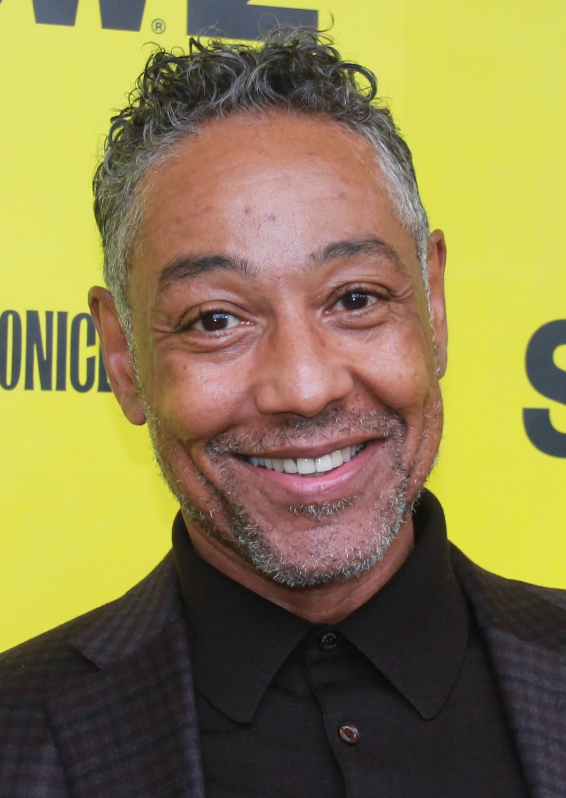

CASTING
BOB ODENKIRK

Robert John Odenkirk was born in Berwyn, Illinois, to Barbara (Baier) and Walter Odenkirk, who worked in printing. He worked as a DJ for WIDB, his college radio station at Southern Illinois University Carbondale.
RHEA SEEHORN
Robert John Odenkirk was born in Berwyn, Illinois, to Barbara (Baier) and Walter Odenkirk, who worked in printing. He worked as a DJ for WIDB, his college radio station at Southern Illinois University Carbondale.
JONATHAN BANKS

Robert John Odenkirk was born in Berwyn, Illinois, to Barbara (Baier) and Walter Odenkirk, who worked in printing. He worked as a DJ for WIDB, his college radio station at Southern Illinois University Carbondale.
MICHAEL MANDO

Robert John Odenkirk was born in Berwyn, Illinois, to Barbara (Baier) and Walter Odenkirk, who worked in printing. He worked as a DJ for WIDB, his college radio station at Southern Illinois University Carbondale.
MICHAEL MCKEAN

Robert John Odenkirk was born in Berwyn, Illinois, to Barbara (Baier) and Walter Odenkirk, who worked in printing. He worked as a DJ for WIDB, his college radio station at Southern Illinois University Carbondale.
GIANCARLO EXPOSITO
Robert John Odenkirk was born in Berwyn, Illinois, to Barbara (Baier) and Walter Odenkirk, who worked in printing. He worked as a DJ for WIDB, his college radio station at Southern Illinois University Carbondale.